Panduan Praktik:
Membuat Game Platformer 2D
Modul praktik terstruktur berorientasi HOTS (Higher Order Thinking Skills). Pelajari langkah-langkah logika fundamental game platformer, mulai dari kontrol pergerakan karakter hingga implementasi AI musuh dan UI interaktif.
# Pendahuluan
Game bergenre Platformer adalah genre game di mana pemain mengendalikan karakter untuk melompati platform, menghindari rintangan, dan mengalahkan musuh di dalam level permainan. Logika dasar dalam game platformer menjadi pondasi krusial bagi developer dalam memahami interaksi fisika, penanganan input player, serta kecerdasan buatan (AI) sederhana.
Dalam modul ini, kita akan menggunakan Unity Game Engine (2D Mode) dan scripting C# untuk merealisasikan mekanik-mekanik esensial game platformer secara terperinci.
01. Setup Player & Platform
Langkah awal adalah mempersiapkan objek game dan komponen fisika di Unity agar objek dapat dipengaruhi gravitasi dan memiliki volume batas tabrakan (collision).
-
1
Buat Scene Baru: Jalankan program Unity, lalu buat scene 2D baru dan buka scene tersebut.
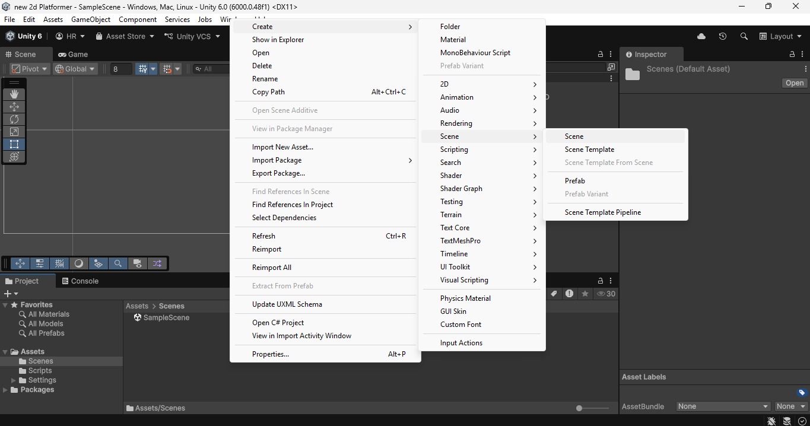
-
2
Buat Game Object Player: Di panel Hierarchy, klik kanan, pilih 2D Object > Sprites > Square. Beri nama objek ini
PlayeratauCharacter. Ganti warnanya di komponen Sprite Renderer agar terlihat kontras.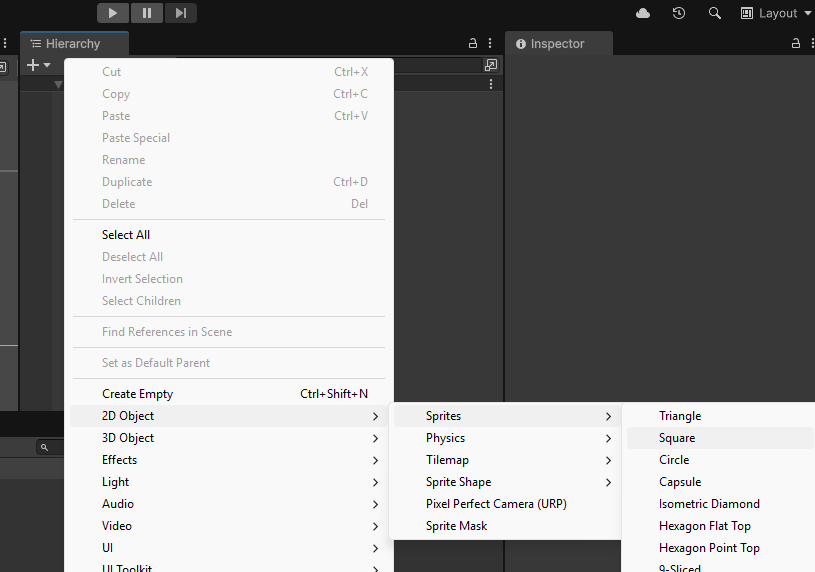
-
3
Tambahkan Rigidbody 2D: Klik objek Player, di panel Inspector klik Add Component, cari dan tambahkan Rigidbody 2D. Komponen ini memberikan sifat fisik (seperti masa dan gravitasi) pada objek.
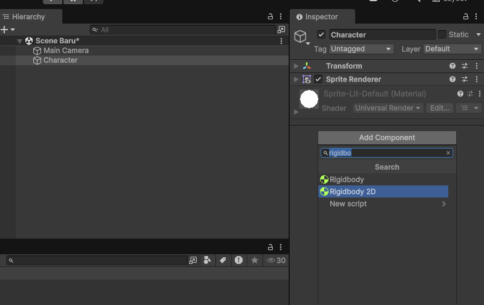
-
4
Tambahkan Box Collider 2D: Masih di objek Player, klik Add Component lalu pasang Box Collider 2D agar player dapat menabrak objek lain secara fisik.
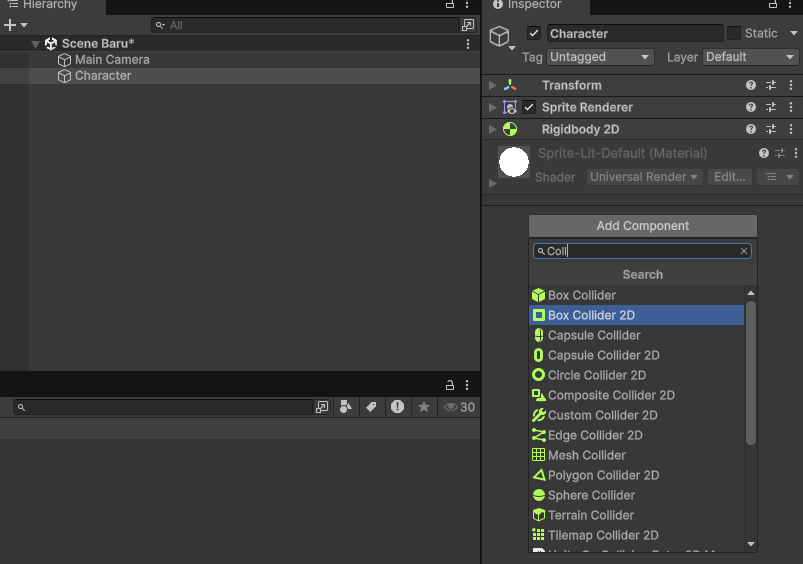
-
5
Buat Objek Platform: Klik kanan di Hierarchy, buat objek Square baru dan beri nama
Platform. Gunakan Move Tool (tombolW) untuk menyeretnya ke bawah Player, lalu gunakan Rect Tool (tombolT) untuk memperlebar platform tersebut agar menjadi pijakan jalan.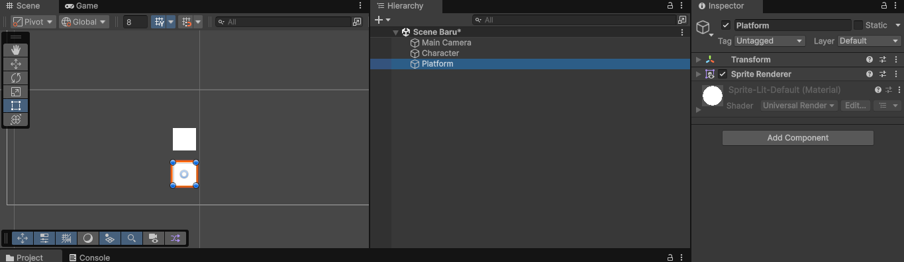
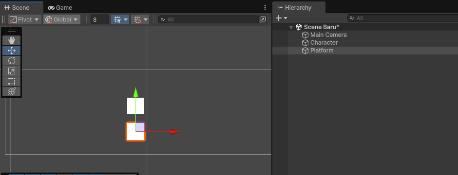
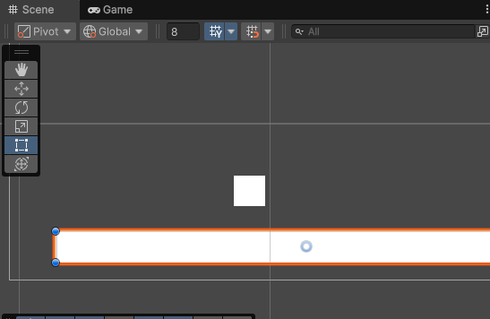
-
6
Tambahkan Box Collider 2D ke Platform: Agar Player tidak jatuh menembus platform, klik objek Platform, klik Add Component lalu tambahkan Box Collider 2D.
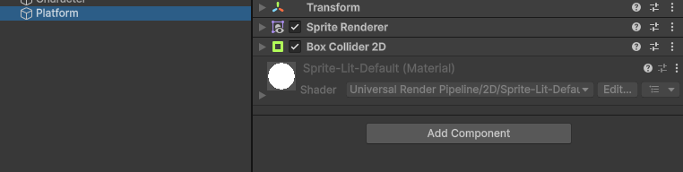
💡 Tips Efisiensi
Pada komponen Rigidbody 2D milik Player, buka sub-menu Constraints lalu centang opsi Freeze Rotation Z. Hal ini mencegah karakter Anda terguling (berputar miring) saat menabrak ujung sudut platform.
02. Pergerakan Karakter (Horizontal Movement)
Untuk mengendalikan pergerakan karakter ke kiri dan ke kanan, kita akan membuat skrip C# yang membaca input keyboard dan memanipulasi kecepatan (velocity) Rigidbody 2D.
-
1
Buat Folder Script: Di panel Project (biasanya di bagian bawah layar Unity), klik kanan area kosong di dalam folder
Assets, pilih Create > Folder, dan namai folder tersebutScripts. Merapikan file ke dalam folder adalah kebiasaan coding profesional agar proyek tidak berantakan.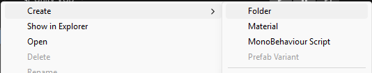
-
2
Buat Script Baru: Klik ganda masuk ke folder
Scriptsyang baru dibuat. Klik kanan area kosong, pilih Create > C# Script. Unity akan membuat file baru, segera ketik namaCharacterMovement(tanpa spasi) lalu tekan Enter untuk mengonfirmasi. Perhatian: penamaan script harus persis sama dengan nama class di dalamnya — tidak boleh ada spasi atau karakter khusus.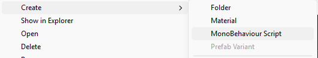
-
3
Implementasikan Kode Pergerakan: Klik ganda file
CharacterMovementdi panel Project untuk membukanya di editor kode (Visual Studio atau VS Code). Hapus semua isi template bawaan Unity, lalu salin dan tempelkan seluruh kode di bawah ini. Kode ini bertugas membaca tombol keyboard dan menggerakkan player ke kiri/kanan secara fisika.
using UnityEngine;
public class CharacterMovement : MonoBehaviour
{
[Header("Komponen Fisika")]
public Rigidbody2D rb; // Referensi ke komponen Rigidbody2D karakter
[Header("Parameter Pergerakan")]
public float horizontal; // Menyimpan nilai input horizontal (-1, 0, atau 1)
public float speed = 7f; // Kecepatan gerak horizontal karakter
void Start()
{
// Blokir rotasi karakter agar tidak terbalik akibat tabrakan fisik
rb.constraints = RigidbodyConstraints2D.FreezeRotation;
}
void Update()
{
// Membaca input keyboard: tekan kiri → -1, tidak ada → 0, tekan kanan → 1
horizontal = Input.GetAxisRaw("Horizontal");
}
private void FixedUpdate()
{
// Menerapkan kecepatan ke Rigidbody2D (dipanggil bersamaan engine fisika)
rb.linearVelocity = new Vector2(horizontal * speed, rb.linearVelocity.y);
}
}-
4
Hubungkan Script ke Objek Player: Kembali ke Unity (simpan dulu kode Anda di editor). Di panel Project, temukan file
CharacterMovement, kemudian drag and drop (klik, tahan, dan seret) file tersebut ke atas objek Player di panel Hierarchy. Jika berhasil, komponen script akan muncul di bagian bawah Inspector saat Player dipilih.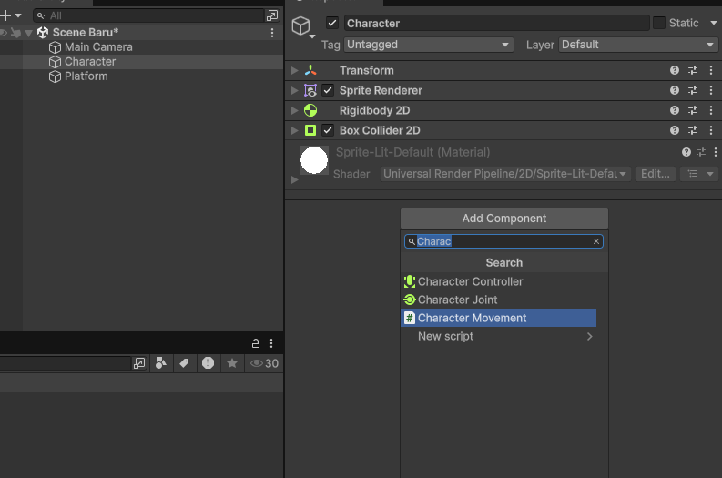
-
5
Hubungkan Komponen Rigidbody ke Slot Script: Pilih objek Player di Hierarchy. Di panel Inspector, temukan komponen CharacterMovement. Di sana ada kolom variabel bernama Rb yang masih kosong. Sekarang, drag komponen Rigidbody 2D (dari Inspector Player itu sendiri) ke dalam kolom Rb tersebut. Ini menghubungkan script Anda dengan komponen fisika Player.
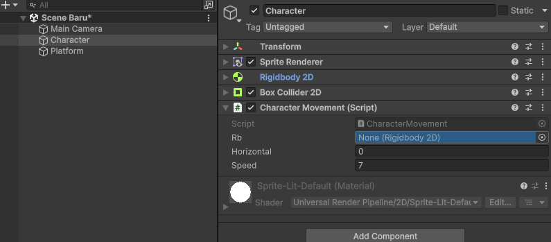
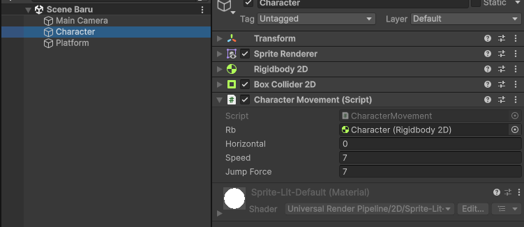
⚙️ Perhatian Terkait Update Unity Terbaru
Mulai Unity versi terbaru, properti velocity pada Rigidbody2D direkomendasikan ditulis sebagai linearVelocity untuk penanganan kecepatan linear yang lebih teroptimasi. Kode di atas telah menggunakan sintaksis modern ini.
03. Mekanik Lompat (Jumping)
Mekanik lompat diimplementasikan dengan menambahkan dorongan instan ke atas pada koordinat sumbu Y kecepatan linear (vertical velocity) saat pemain menekan tombol lompat.
-
1
Tambahkan Variabel Kekuatan Lompat: Buka kembali script
CharacterMovement.csdi editor kode. Di dalam bagian deklarasi variabel (sebelum methodStart()), tambahkan baris baru:public float jumpForce = 7f;. Variabel ini dapat diubah nilainya langsung dari Inspector Unity tanpa harus mengedit kode lagi — ini adalah praktik "tweakable variable" yang sangat berguna saat playtest. -
2
Deteksi Input Lompat & Terapkan Dorongan: Di dalam method
Update(), tambahkan blok kondisiifuntuk mendeteksi tombol Space. GunakanInput.GetKeyDown(KeyCode.Space)— fungsi ini hanya mendeteksi momen pertama tombol ditekan (satu frame), bukan saat ditahan. Ketika terdeteksi, set komponen Y darilinearVelocitymenjadi nilaijumpForceuntuk menciptakan dorongan ke atas secara instan.
using UnityEngine;
public class CharacterMovement : MonoBehaviour
{
public Rigidbody2D rb;
public float horizontal;
public float speed = 7f;
public float jumpForce = 7f; // Variabel kekuatan dorongan lompat
void Start() {}
void Update()
{
horizontal = Input.GetAxisRaw("Horizontal");
// Jika tombol Space ditekan, berikan dorongan ke atas
if (Input.GetKeyDown(KeyCode.Space))
{
rb.linearVelocity = new Vector2(rb.linearVelocity.x, jumpForce);
}
}
private void FixedUpdate()
{
rb.linearVelocity = new Vector2(horizontal * speed, rb.linearVelocity.y);
}
}⚠️ Masalah Desain (Bug)
Jalankan game dan tekan tombol Space terus-menerus. Player akan terus melompat tanpa batas di udara (double/triple jump tak terbatas). Untuk mengatasinya, kita memerlukan sistem pendeteksi tanah (Ground Check).
04. Ground Check (Lompat Terbatas 1 Kali)
Agar Player hanya dapat melompat saat menyentuh permukaan tanah/platform, kita akan mendeteksi tumbukan area kaki Player dengan Layer khusus menggunakan fungsi Physics2D.OverlapCircle.
-
1
Buat Game Object GroundCheck: Di panel Hierarchy, klik kanan pada objek Player, lalu pilih Create Empty. Beri nama game object anak ini
GroundCheck. Posisikan objek kosong ini tepat berada di bagian bawah/kaki Player.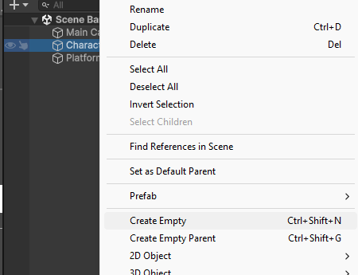
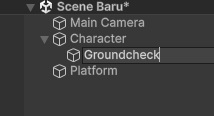
-
2
Buat Layer Ground: Klik objek Platform di Hierarchy. Di pojok kanan atas panel Inspector, klik menu drop-down Layer lalu pilih Add Layer.... Ketik nama layer baru pada kolom indeks kosong, misalnya
Ground. Setelah didefinisikan, pastikan Anda kembali mengklik objek Platform lalu atur layernya menjadiGround.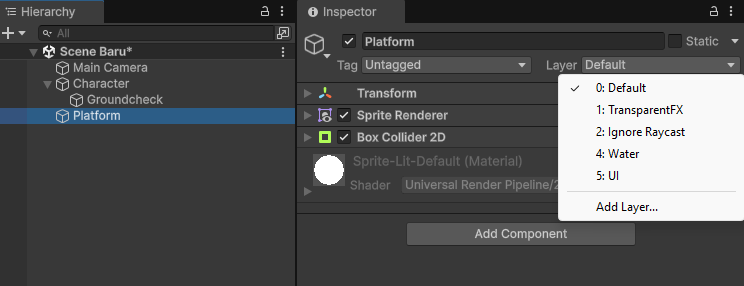
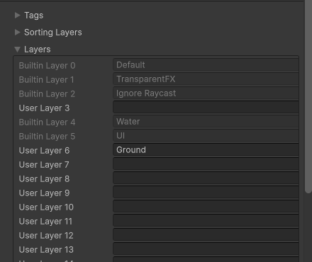
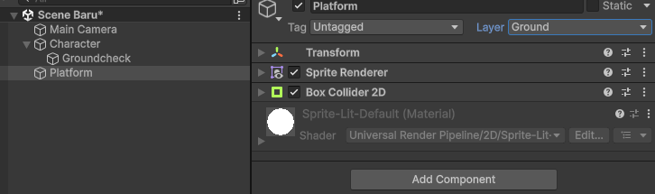
-
3
Perbarui Script CharacterMovement: Buka script dan modifikasi kodenya menjadi seperti berikut:
using UnityEngine;
public class CharacterMovement : MonoBehaviour
{
[Header("Pergerakan")]
public Rigidbody2D rb;
public float horizontal;
public float speed = 7f;
public float jumpForce = 7f;
[Header("Deteksi Tanah")]
public Transform groundCheck; // Referensi posisi objek GroundCheck
public bool isGrounded = true; // Status apakah menyentuh tanah
public float radiusCheck = 0.2f; // Radius lingkaran pendeteksi
public LayerMask groundLayer; // Menyimpan layer target deteksi (Ground)
void Start() {}
void Update()
{
horizontal = Input.GetAxisRaw("Horizontal");
// Memeriksa apakah area lingkaran groundCheck bersentuhan dengan groundLayer
isGrounded = Physics2D.OverlapCircle(groundCheck.position, radiusCheck, groundLayer);
// Syarat lompat: tombol ditekan DAN player sedang menyentuh tanah
if (Input.GetKeyDown(KeyCode.Space) && isGrounded)
{
rb.linearVelocity = new Vector2(rb.linearVelocity.x, jumpForce);
}
}
private void FixedUpdate()
{
rb.linearVelocity = new Vector2(horizontal * speed, rb.linearVelocity.y);
}
// Menggambar visualisasi lingkaran check di Scene editor
private void OnDrawGizmos()
{
if (groundCheck != null)
{
Gizmos.color = Color.green;
Gizmos.DrawWireSphere(groundCheck.position, radiusCheck);
}
}
}-
4
Hubungkan Parameter di Inspector: Pilih Player di Hierarchy. Di script Character Movement di Inspector:
• Tarik game object anak GroundCheck ke dalam slot variabelGround Check.
• Pilih opsi menu drop-downGround Layerlalu centang layerGround.
• AturRadius Check(misal:0.2). Anda dapat melihat visualisasi lingkaran berwarna hijau di panel Scene. Pastikan posisinya menyentuh permukaan bawah Player.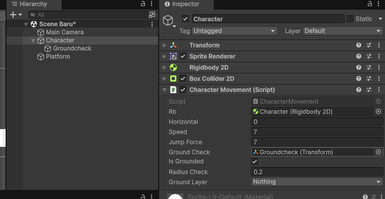
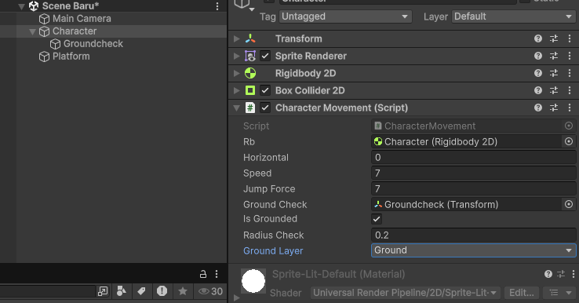
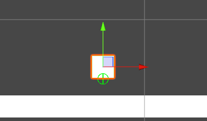
05. Pergerakan Kamera (Camera Follow)
Agar arena petualangan terasa luas, kamera harus mengikuti pergerakan Player secara horizontal maupun vertikal dengan pergerakan yang halus (smoothing interpolation).
-
1
Buat Script Kamera: Di folder Scripts, buat script C# baru dan beri nama
CameraMovement.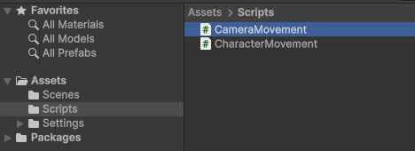
-
2
Ketikkan Logic Kamera: Buka script kamera tersebut lalu pasang kode penanganan interpolasi linier (Lerp) di bawah ini:
using UnityEngine;
public class CameraMovement : MonoBehaviour
{
public Transform target; // Target yang diikuti (Player)
public float smoothSpeed = 5f; // Kecepatan transisi kamera
public Vector3 offset; // Selisih jarak kamera dengan player
// LateUpdate dipanggil setelah semua kalkulasi Update selesai (terbaik untuk kamera)
void LateUpdate()
{
if (target == null) return;
// Tentukan posisi ideal target ditambah dengan offset
Vector3 desiredPosition = target.position + offset;
// Mempertahankan sumbu Z asli kamera agar objek 2D tidak terpotong kamera
desiredPosition.z = transform.position.z;
// Lakukan interpolasi pergerakan halus dari posisi sekarang ke posisi ideal
transform.position = Vector3.Lerp(transform.position, desiredPosition, smoothSpeed * Time.deltaTime);
}
}-
3
Setup di Unity: Tarik script
CameraMovementdan lepaskan di objek Main Camera di panel Hierarchy. -
4
Input Referensi Target: Klik Main Camera di Hierarchy. Drag objek Player ke dalam kolom variabel
Targetpada script kamera. Atur nilai Offset (misal: Y =1, Z =-10) untuk memberikan perspektif yang baik.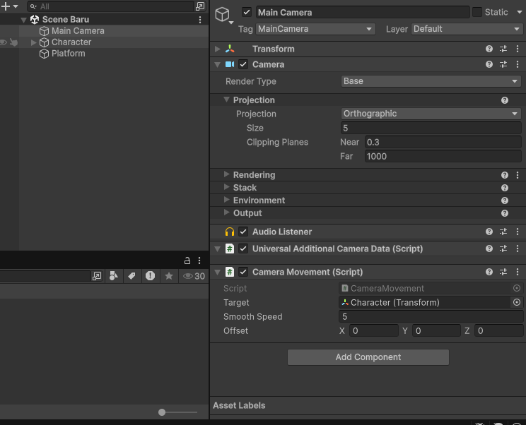
06. AI Patroli Musuh (Enemy Patrol)
Membuat objek musuh bergerak otomatis bolak-balik antara dua titik batas patroli (Point A dan Point B) serta membalikkan arah hadap sprite secara otomatis.
-
1
Buat Game Object Musuh: Klik kanan di Hierarchy, pilih 2D Object > Sprites > Square. Beri nama
Enemy. Ubah warna Spritenya menjadi merah menyala di komponen Sprite Renderer agar terlihat berbahaya. Tempatkan di area platform yang agak jauh dari Player.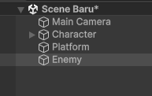
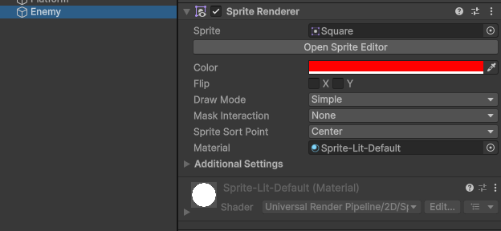
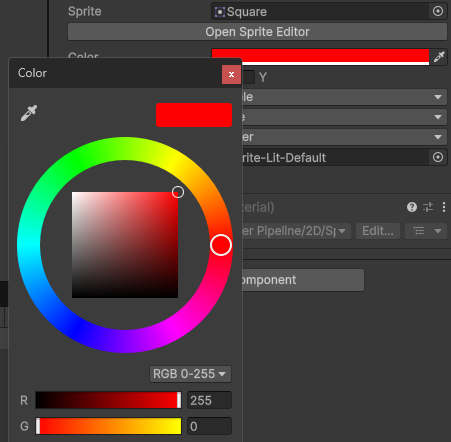
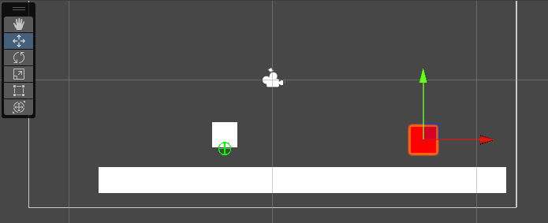
-
2
Buat Titik Batas Patroli: Klik kanan di Hierarchy, buat 2 objek kosong (Create Empty) dan beri nama masing-masing
PointAdanPointB. Beri ikon label khusus agar Anda dapat memantau posisinya di panel Scene secara visual. Geser Point A ke sisi batas kiri patroli, dan Point B ke sisi batas kanan patroli.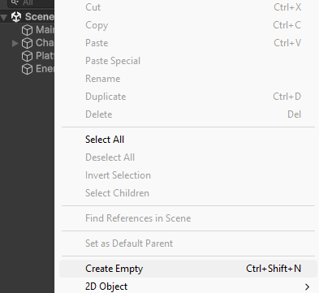
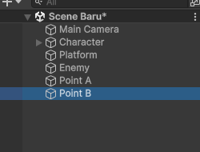
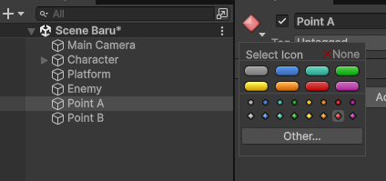
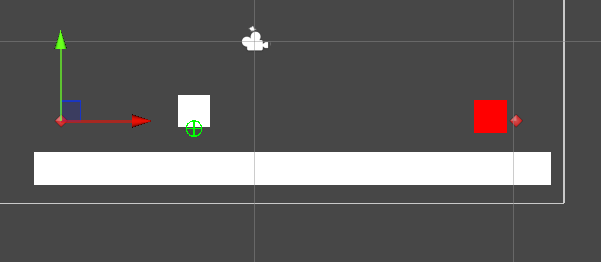
-
3
Buat Script Patroli Musuh: Buat script C# baru bernama
EnemyPatroldi folder Scripts, lalu tuliskan logika patroli berikut:
using UnityEngine;
public class EnemyPatrol : MonoBehaviour
{
[Header("Titik Patroli")]
public Transform pointA;
public Transform pointB;
public float speed = 2f;
private Transform targetPoint;
void Start()
{
// Memulai rute dengan berjalan ke titik B
targetPoint = pointB;
}
void Update()
{
if (pointA == null || pointB == null) return;
// Bergerak mendekati targetPoint tujuan
transform.position = Vector2.MoveTowards(
transform.position,
targetPoint.position,
speed * Time.deltaTime
);
// Jika posisi musuh sudah dekat dengan titik tujuan
if (Vector2.Distance(transform.position, targetPoint.position) < 0.1f)
{
// Ubah target tujuan (jika tadinya ke A, ganti ke B, dan sebaliknya)
targetPoint = (targetPoint == pointA) ? pointB : pointA;
// Balik arah visual Sprite musuh
Flip();
}
}
void Flip()
{
// Membalik skala sumbu X agar arah sprite berbalik arah
Vector3 scale = transform.localScale;
scale.x *= -1;
transform.localScale = scale;
}
// Menampilkan visualisasi garis patroli berwarna merah di Scene view
private void OnDrawGizmos()
{
if (pointA != null && pointB != null)
{
Gizmos.color = Color.red;
Gizmos.DrawLine(pointA.position, pointB.position);
Gizmos.color = Color.green;
Gizmos.DrawWireSphere(pointA.position, 0.15f);
Gizmos.DrawWireSphere(pointB.position, 0.15f);
}
}
}-
4
Hubungkan Referensi Inspector: Pasang script
EnemyPatroldi objek Enemy. Tarik objek PointA dan PointB dari Hierarchy ke dalam slot variabel script musuh yang bersangkutan di Inspector. Jalankan game untuk melihat musuh berjalan mondar-mandir otomatis.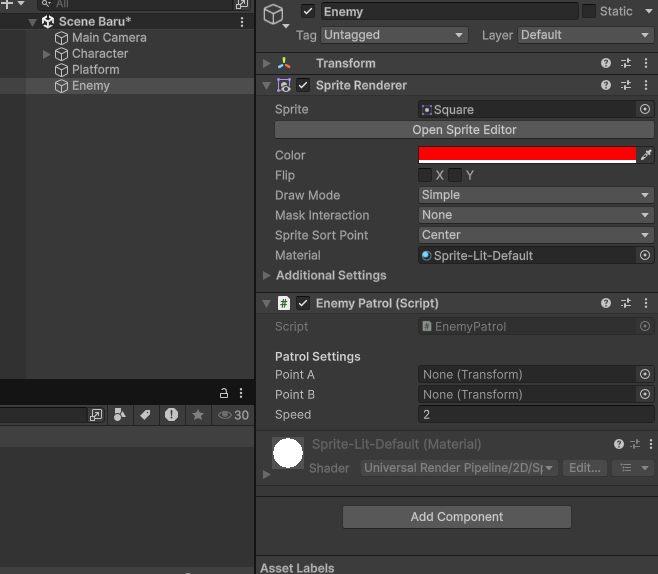
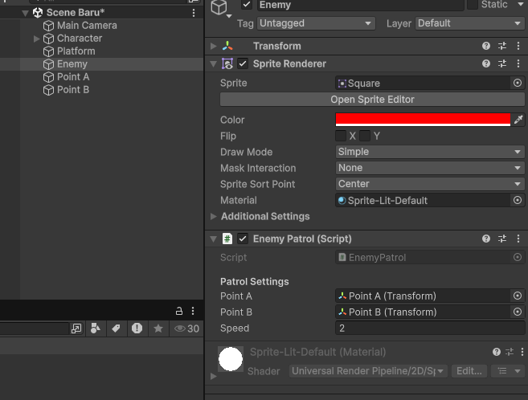
07. Interaksi & Lose UI
Mendeteksi tabrakan antara Player dan Musuh menggunakan trigger collider. Ketika tertabrak, layar game akan memunculkan tulisan UI "Game Over".
-
1
Buat UI Text: Klik kanan di Hierarchy, pilih UI > Text - TextMeshPro. Jika muncul dialog impor TextMeshPro, klik Import TMP Essentials lalu tutup jika sudah selesai.
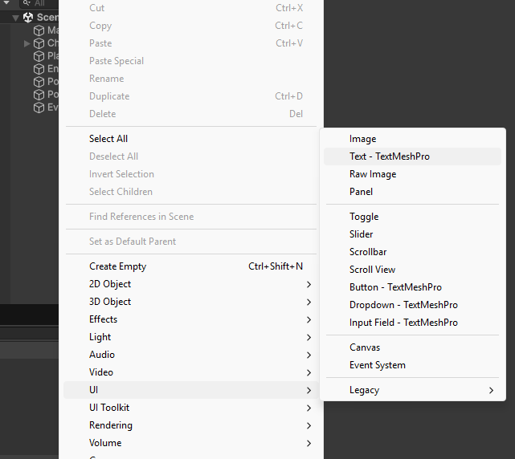
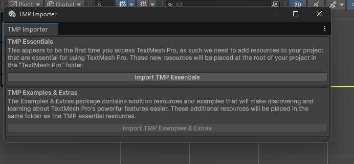
-
2
Desain Game Over Text: Beri nama game object teks ini
GameOverText. Atur resolusi game di panel Game tab menjadi Full HD (1920x1080). Pada komponen Rect Transform teks:
• Klik ikon anchor kotak di pojok kiri atas, tahan tombolAlt + Shiftlalu klik kotak penuh (Stretch-stretch) di pojok kanan bawah agar teks mencakup area layar.
• Ubah isi teks menjadi "GAME OVER". Atur ukuran font, ketebalan (Bold), ganti warna menjadi merah, serta posisikan perataan di tengah (center alignment).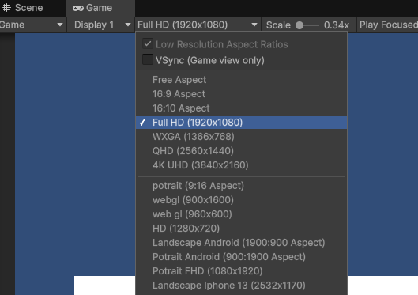
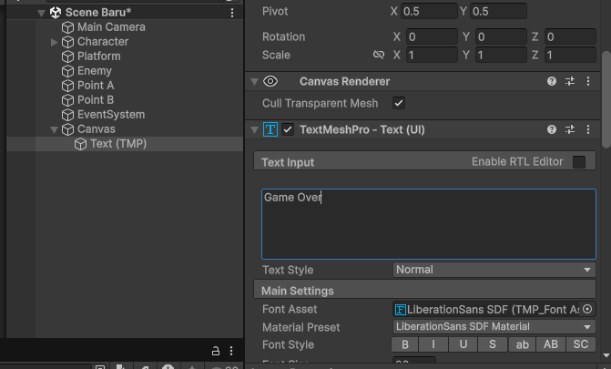
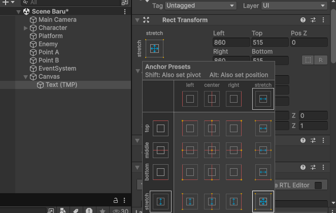
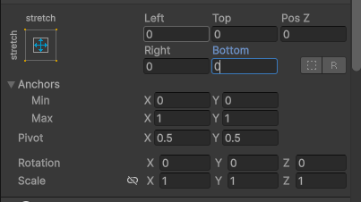
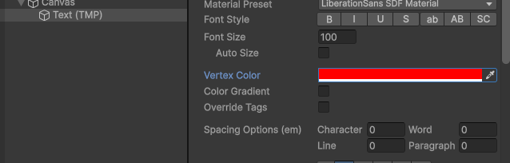
-
3
Sembunyikan Awal (Deactive): Nonaktifkan (uncheck) game object
GameOverTextdi bagian atas panel Inspector agar teks tersembunyi saat game dimulai.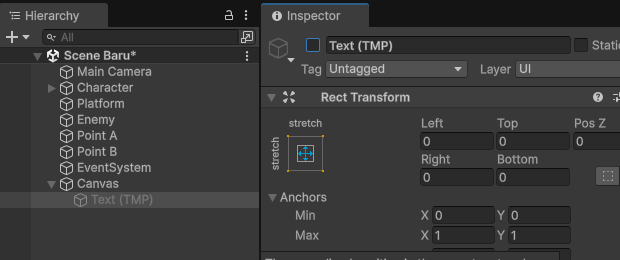
-
4
Setting Collider Musuh: Tambahkan Box Collider 2D ke objek Enemy. Pastikan Anda mencentang parameter Is Trigger. Parameter ini mengubah collider menjadi sensor area sentuh tanpa memantulkan fisik player.
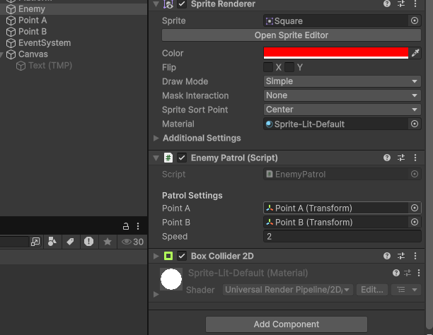
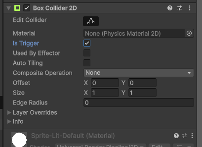
-
5
Beri Tag Player: Klik objek Player di Hierarchy. Pastikan di Inspector bagian atas, bagian Tag sudah diset menjadi
Player(ini adalah tag default Unity). -
6
Perbarui Kode EnemyPatrol: Modifikasi script
EnemyPatroldengan menambahkan sensor deteksi trigger berikut:
using UnityEngine;
public class EnemyPatrol : MonoBehaviour
{
[Header("Titik Patroli")]
public Transform pointA;
public Transform pointB;
public float speed = 2f;
private Transform targetPoint;
[Header("Interaksi UI")]
public GameObject TextLabel; // Kolom referensi GameOverText / Panel Lose
void Start()
{
targetPoint = pointB;
}
void Update()
{
if (pointA == null || pointB == null) return;
transform.position = Vector2.MoveTowards(
transform.position,
targetPoint.position,
speed * Time.deltaTime
);
if (Vector2.Distance(transform.position, targetPoint.position) < 0.1f)
{
targetPoint = (targetPoint == pointA) ? pointB : pointA;
Flip();
}
}
void Flip()
{
Vector3 scale = transform.localScale;
scale.x *= -1;
transform.localScale = scale;
}
private void OnDrawGizmos()
{
if (pointA != null && pointB != null)
{
Gizmos.color = Color.red;
Gizmos.DrawLine(pointA.position, pointB.position);
Gizmos.color = Color.green;
Gizmos.DrawWireSphere(pointA.position, 0.15f);
Gizmos.DrawWireSphere(pointB.position, 0.15f);
}
}
// Terpanggil otomatis ketika collider objek ber-tag 'Player' memasuki area trigger musuh
private void OnTriggerEnter2D(Collider2D collision)
{
if (collision.CompareTag("Player"))
{
// Aktifkan panel / teks GameOver
if (TextLabel != null)
{
TextLabel.SetActive(true);
}
}
}
}-
7
Hubungkan UI Text ke Musuh: Klik objek Enemy. Pada script
EnemyPatroldi Inspector, drag game object GameOverText yang sudah dibuat sebelumnya ke kolom variabel Text Label. Jalankan game, tabrakan Player ke Musuh, layar akan memunculkan tulisan "GAME OVER".
08. Sistem Win & Lose Canvas
Agar game memiliki alur kompetitif, kita membutuhkan kondisi akhir permainan: Menang (Win Condition) saat menyelesaikan rintangan dan mencapai tujuan, serta Kalah (Lose Condition) berupa UI Panel yang menyediakan tombol interaktif untuk mengulangi permainan.
-
1
Buat Game Object Win Trigger (Finish Portal): Buat objek 2D Object > Sprites > Square (misal diberi nama
WinPortal) berbentuk bendera atau pintu di ujung kanan level. Tambahkan Box Collider 2D, dan centang opsi Is Trigger. -
2
Buat Win & Lose UI Panel: Buat UI Canvas baru (klik kanan > UI > Canvas). Di dalam Canvas, buat dua UI Panel berbeda:
• WinPanel: Berisi background transparan berwarna biru/hijau, teks "YOU WIN!" atau "VICTORY", serta tombol "Next Level" dan "Main Menu".
• LosePanel: Berisi background transparan berwarna merah/hitam gelap, teks "GAME OVER", serta tombol "Restart" dan "Main Menu".
Nonaktifkan (deactive) kedua panel tersebut secara default di Hierarchy. -
3
Buat Script Manager Penanganan Level: Buat script C# bernama
GameLevelManageruntuk menangani scene reloading dan navigasi tombol:
using UnityEngine;
using UnityEngine.SceneManagement; // Dibutuhkan untuk memuat scene
public class GameLevelManager : MonoBehaviour
{
// Memuat ulang level saat ini (Kalah / Restart)
public void RestartLevel()
{
SceneManager.LoadScene(SceneManager.GetActiveScene().name);
}
// Memuat Scene berikutnya berdasarkan Build Index (Menang / Next Level)
public void NextLevel()
{
int nextSceneIndex = SceneManager.GetActiveScene().buildIndex + 1;
if (nextSceneIndex < SceneManager.sceneCountInBuildSettings)
{
SceneManager.LoadScene(nextSceneIndex);
}
else
{
// Kembali ke Menu Utama jika level habis
SceneManager.LoadScene("MainMenu");
}
}
// Kembali ke Menu Utama
public void LoadMainMenu()
{
SceneManager.LoadScene("MainMenu");
}
}-
4
Hubungkan Fungsi Tombol: Buat Empty Game Object bernama
LevelManagerdi Scene, tempelkan scriptGameLevelManager. Klik masing-masing tombol UI di Hierarchy (misal tombol Restart), geser objekLevelManagerke slot event On Click () di Inspector, lalu pilih fungsiGameLevelManager > RestartLevel. Lakukan hal serupa untuk tombol lainnya. -
5
Buat Script Pemicu Kemenangan (WinTrigger): Buat script C# baru bernama
WinTriggerdan tempelkan di objekWinPortal:
using UnityEngine;
public class WinTrigger : MonoBehaviour
{
public GameObject winPanel; // Hubungkan WinPanel di Inspector
private void OnTriggerEnter2D(Collider2D collision)
{
// Mengecek apakah yang menyentuh sensor portal adalah Player
if (collision.CompareTag("Player"))
{
if (winPanel != null)
{
winPanel.SetActive(true); // Tampilkan layar kemenangan
}
// Nonaktifkan pergerakan Player agar diam saat menang
CharacterMovement movement = collision.GetComponent<CharacterMovement>();
if (movement != null) movement.enabled = false;
Rigidbody2D rb = collision.GetComponent<Rigidbody2D>();
if (rb != null) rb.linearVelocity = Vector2.zero;
}
}
}09. Mengganti Art Asset
Agar visual game terlihat lebih profesional dan estetis, kita harus mengganti objek-objek geometri dasar (Square/kotak putih) bawaan Unity dengan Asset Gambar 2D (Sprites) buatan sendiri atau yang diunduh dari internet.
-
1
Import Asset Gambar ke Unity: Buat folder bernama
Spritesdi panel Project. Drag & drop berkas gambar (format.png) dari komputer Anda ke dalam folder Sprites tersebut. -
2
Atur Konfigurasi Sprite: Klik file gambar asset di panel Project, lalu lihat bagian Inspector:
• Texture Type: Atur menjadiSprite (2D and UI).
• Sprite Mode: PilihSingle(jika hanya ada 1 gambar di berkas) atauMultiple(jika berupa sprite-sheet/kumpulan gambar karakter yang disatukan dalam satu file).
• Pixels Per Unit (PPU): Mengatur seberapa besar ukuran gambar di workspace game. Semakin besar nilai PPU, sprite akan tampil semakin kecil dan padat. Angka standar adalah100atau16/32untuk gaya seni Pixel Art.
• Klik tombol **Apply** di bagian bawah. -
3
Memotong Sprite Sheet (Slicing): Jika memilih opsi
Multiple, klik tombol Sprite Editor. Pada jendela baru yang muncul, klik drop-down **Slice**, pilih type **Automatic** atau **Grid By Cell Size** (sesuai resolusi grid gambar), klik **Slice**, lalu klik **Apply** di kanan atas jendela Editor. Gambar akan terpotong secara individu. -
4
Mengganti Visual Karakter (Player/Enemy): Klik objek
PlayeratauEnemydi panel Hierarchy. Di panel Inspector, cari komponen Sprite Renderer. Seret sprite gambar karakter baru yang telah dipotong ke dalam kolom parameter Sprite. Visual kotak putih bawaan akan otomatis berganti dengan gambar baru. -
5
Menyesuaikan Collider dengan Gambar Baru: Gambar kustom sering kali memiliki lekukan unik. Jika Anda masih menggunakan Box Collider 2D bawaan, batas tabrakan mungkin tidak pas:
• Anda dapat menghapus Box Collider 2D (Klik kanan judul komponen > **Remove Component**).
• Tambahkan Capsule Collider 2D (sangat direkomendasikan untuk bentuk tubuh karakter tegak) atau Polygon Collider 2D (yang otomatis membentuk lekukan rumit sesuai outline pixel sprite).
• Sesuaikan parameter **Size** dan **Offset** collider agar pas menyelimuti bagian vital karakter. -
6
Membuat Latar Belakang (Background Tiling): Untuk memasang background langit/arena yang berulang (seamless):
• Tarik sprite background ke panel Hierarchy.
• Di komponen Sprite Renderer background, ganti parameter Draw Mode dariSimplemenjadiTiled.
• Atur ukuran Width & Height di parameter Size. Visual background akan memanjang seperti ubin tanpa pecah.
# Tantangan Praktik Mandiri (HOTS)
Setelah berhasil mengimplementasikan logika dasar di atas, uji kreativitas dan pemahaman logika pemrograman Anda dengan menyelesaikan tantangan modifikasi kode berikut:
⭐ TANTANGAN 1: Implementasi Double Jump
Modifikasi script CharacterMovement.cs agar Player dapat melompat maksimal dua kali di udara sebelum kembali menyentuh tanah. Clue: Tambahkan variabel integer jumpCount untuk melacak sisa lompatan player.
⭐ TANTANGAN 2: Better Gravity Jump (Fisika Lebih Responsif)
Ketika melompat, lompatan terasa melayang kurang responsif. Modifikasi physics gravitasi player dengan menaikkan gravityScale di Rigidbody2D secara dinamis saat Player berada dalam posisi jatuh bebas (fall). Clue: Cek jika rb.linearVelocity.y < 0 di Update.
⭐ TANTANGAN 3: Koin / Collectible Star & UI Score
Tambahkan objek bintang/koin bersensor trigger. Jika disentuh Player, objek akan hancur (Destroy(gameObject)) dan menambah nilai skor yang ditampilkan di layar menggunakan Canvas Text. Clue: Gunakan variabel statis atau Manager UI.
# Tugas Proyek Akhir: Mini Game Platformer
Untuk menguji penguasaan materi secara menyeluruh, Anda ditugaskan untuk merancang dan merakit sebuah game 2D Platformer utuh berstandar publikasi dengan ketentuan kriteria kelayakan berikut:
📋 KETENTUAN 1: Pembentukan UI Menu Utama
Buat Scene baru bernama MainMenu yang memiliki judul game yang menarik, tombol "Play/Mulai", tombol "Level Select", dan tombol "Quit/Keluar".
📋 KETENTUAN 2: Menu Seleksi Level
Sediakan layar navigasi yang membolehkan pemain memilih level yang ingin dimainkan secara bebas (Level 1, Level 2, atau Level 3).
📋 KETENTUAN 3: Desain 3 Level Game
Buat 3 scene level dengan tingkat kesulitan yang meningkat secara bertahap:
• Level 1: Pengenalan mekanik pergerakan dasar, melompati platform diam, tanpa musuh.
• Level 2: Pengenalan musuh patroli, platform melayang dengan jarak yang membutuhkan presisi lompatan.
• Level 3: Kombinasi rintangan mematikan (musuh bergerak cepat, jurang duri, dan platform bergerak/licin).
📋 KETENTUAN 4: Ganti Art Asset Keseluruhan
Semua visual dalam game wajib diganti menggunakan Sprite Art 2D kustom (tidak boleh menggunakan kubus putih bawaan Unity). Ini mencakup Player, musuh, pijakan platform, background, dan portal finish.
📋 KETENTUAN 5: Sistem Menang & Kalah Terintegrasi
Hubungkan sistem kondisi menang dan kalah game secara teratur:
• Jika Player berhasil menyentuh portal akhir di Level 3, tampilkan layar/panel Kemenangan Akhir (Victory Screen) yang mengucapkan selamat dan opsi tombol kembali ke Main Menu.
• Jika Player menyentuh musuh atau jatuh ke jurang di level mana pun, tampilkan layar/panel Kekalahan (Lose Screen) dengan tombol "Restart" untuk memuat ulang scene itu saja.
📖 Glosarium Istilah & Fungsi Kode
Kumpulan definisi istilah teknis, komponen Unity, dan fungsi C# yang digunakan dalam modul ini. Jadikan ini sebagai referensi cepat saat Anda menemukan kata-kata asing.
🎮 Istilah Unity Engine
| Istilah | Penjelasan |
|---|---|
Scene |
Layar atau "dunia" dalam game. Satu game bisa memiliki banyak scene, misalnya scene MainMenu, Level1, Level2, dsb. |
Game Object |
Segala benda yang ada di dalam scene Unity — karakter, platform, kamera, lampu, dll. Semua adalah Game Object. |
Component |
Modul kemampuan yang ditambahkan ke Game Object. Contoh: Rigidbody 2D memberi fisika, Box Collider 2D memberi batasan tabrakan. |
Hierarchy |
Panel di sebelah kiri Unity yang menampilkan daftar semua Game Object yang ada di scene saat ini. |
Inspector |
Panel di sebelah kanan Unity yang menampilkan semua komponen dan properti dari Game Object yang sedang dipilih. |
Project Panel |
Panel di bagian bawah Unity yang berfungsi seperti File Explorer — menampilkan semua aset (gambar, script, audio, dsb.) dalam proyek. |
Rigidbody 2D |
Komponen fisika yang membuat objek dipengaruhi gravitasi dan gaya luar. Tanpa ini, objek tidak akan jatuh atau bergerak secara realistis. |
Box Collider 2D |
Komponen yang menambahkan batas "kotak tidak kasatmata" pada objek. Digunakan agar dua objek tidak saling menembus saat bertabrakan. |
Is Trigger |
Opsi pada Collider. Jika dicentang, collider berfungsi sebagai sensor area sentuh (tidak memantulkan fisik). Digunakan untuk mendeteksi apakah dua objek bersinggungan. |
Sprite |
Gambar 2D yang digunakan sebagai visual objek dalam game. Bisa berupa karakter, background, tile platform, atau ikon UI. |
Prefab |
Template Game Object yang dapat digunakan berulang kali. Jika satu Prefab diubah, semua instansinya di scene akan ikut berubah secara otomatis. |
Layer |
Label pengelompok objek. Berguna untuk mengatur aturan tabrakan fisika — misalnya: Player hanya bisa berinteraksi dengan Layer "Ground" dan "Enemy". |
Tag |
Label identitas pada Game Object. Digunakan untuk mengidentifikasi objek dalam kode, misalnya CompareTag("Player") untuk mengecek apakah objek yang menyentuh adalah Player. |
Canvas |
Objek khusus tempat semua elemen UI (tombol, teks, panel) diletakkan. Canvas selalu di-render di atas elemen game biasa. |
TextMeshPro |
Sistem teks premium bawaan Unity yang menghasilkan teks tajam dan dapat dikustomisasi secara detail (ukuran, warna, outline, bayangan). |
⚙️ Fungsi & Method C# yang Digunakan
| Fungsi / Method | Penjelasan |
|---|---|
void Start() |
Dipanggil satu kali saat objek pertama kali aktif. Digunakan untuk inisialisasi awal (mengatur nilai default variabel, dll). |
void Update() |
Dipanggil setiap frame (60x per detik pada game 60fps). Digunakan untuk logika yang bergantung pada input dan waktu nyata. |
void FixedUpdate() |
Dipanggil pada interval waktu tetap (default 50x per detik), beriringan dengan engine fisika. Selalu gunakan ini untuk memanipulasi Rigidbody, bukan Update(). |
void LateUpdate() |
Dipanggil setiap frame, tetapi setelah semua Update() selesai. Ideal untuk kamera agar posisinya selalu mengikuti posisi akhir player per frame. |
Input.GetAxisRaw("Horizontal") |
Membaca input sumbu horizontal dari tombol A/D atau panah kiri/kanan. Mengembalikan nilai -1 (kiri), 0 (diam), atau 1 (kanan) tanpa smoothing. |
Input.GetKeyDown(KeyCode.Space) |
Mengembalikan true hanya pada satu frame pertama saat tombol Space ditekan. Berbeda dengan GetKey yang bernilai true selama tombol ditahan. |
rb.linearVelocity |
Properti pada Rigidbody2D yang menyimpan kecepatan linear objek dalam format Vector2(x, y). Mengubah nilai ini langsung menggerakkan objek tanpa delay fisika. |
Physics2D.OverlapCircle() |
Fungsi pengecekan tabrakan berbentuk lingkaran. Mengembalikan true jika ada collider dari layer tertentu yang bersinggungan dengan area lingkaran yang didefinisikan. |
Vector2.MoveTowards() |
Memindahkan posisi A menuju posisi B dengan kecepatan maksimum tertentu per frame. Digunakan pada AI patroli musuh agar gerakannya bertahap dan tidak langsung "teleport". |
Vector3.Lerp(a, b, t) |
Interpolasi linear antara dua titik (a ke b) dengan faktor t (0 = posisi a, 1 = posisi b). Digunakan pada kamera untuk menciptakan gerakan mengikuti player yang halus dan tidak kaku. |
gameObject.SetActive(bool) |
Mengaktifkan (true) atau menonaktifkan (false) sebuah Game Object dari dalam kode. Digunakan untuk menampilkan/menyembunyikan UI panel Game Over atau Win. |
Destroy(gameObject) |
Menghapus permanen sebuah Game Object dari scene saat runtime. Biasa digunakan untuk menghancurkan objek koin/collectible setelah diambil player. |
OnTriggerEnter2D(Collider2D c) |
Method yang dipanggil otomatis oleh Unity ketika sebuah collider ber-Is Trigger dimasuki oleh collider objek lain. Tidak ada gaya fisik yang dihasilkan. |
SceneManager.LoadScene() |
Memuat scene berdasarkan nama atau nomor indeksnya. Digunakan untuk berpindah antar scene (Main Menu → Level 1 → Level 2, dsb.). |
Time.deltaTime |
Waktu (dalam detik) yang berlalu sejak frame terakhir. Digunakan untuk membuat pergerakan konsisten di semua kecepatan komputer — kalikan kecepatan dengan ini agar tidak bergantung pada framerate. |
💡 Konsep Pemrograman Game
| Konsep | Penjelasan |
|---|---|
| Velocity | Kecepatan gerak objek dengan arah (vektor). Contoh: velocity (3, 0) berarti bergerak ke kanan dengan kecepatan 3 unit per detik. Sumbu X = horizontal, sumbu Y = vertikal. |
| Gravity Scale | Pengali gravitasi pada Rigidbody2D. Nilai 1 = gravitasi normal. Nilai 2 = gravitasi dua kali lipat (jatuh lebih cepat). Nilai 0 = tidak dipengaruhi gravitasi. |
| Ground Check | Teknik memeriksa apakah kaki player menyentuh tanah/platform dengan memancarkan area deteksi (circle/ray) di bawah player dan mengecek apakah ada objek layer "Ground" yang tersentuh. |
| Patrol AI | Pola kecerdasan buatan sederhana di mana musuh bergerak bolak-balik antara dua titik (Point A dan Point B) secara otomatis tanpa memerlukan input pemain. |
| Drag and Drop (Inspector) | Cara menghubungkan referensi objek ke variabel public dalam script di Unity, dengan cara menyeret Game Object dari Hierarchy atau Project Panel ke kolom variabel di Inspector. |
| Win/Lose Condition | Kondisi akhir permainan. Win Condition: pemain berhasil mencapai tujuan (menyentuh portal finish). Lose Condition: pemain gagal (menyentuh musuh, jatuh ke jurang). |
| Sprite Slicing | Proses memotong sebuah gambar spritesheet (kumpulan banyak gambar dalam satu file) menjadi sprite-sprite individual menggunakan Sprite Editor di Unity, lalu digunakan satu per satu pada objek game. |